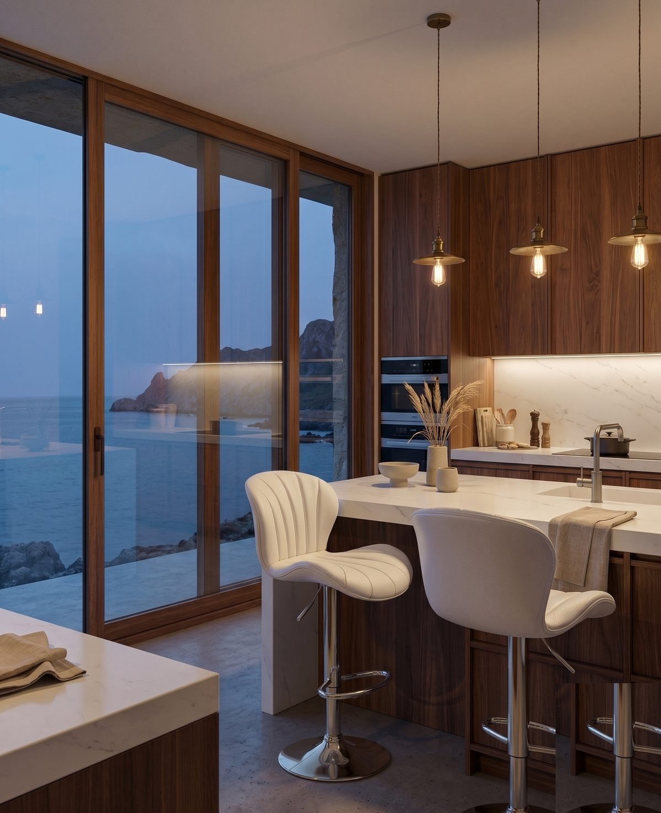
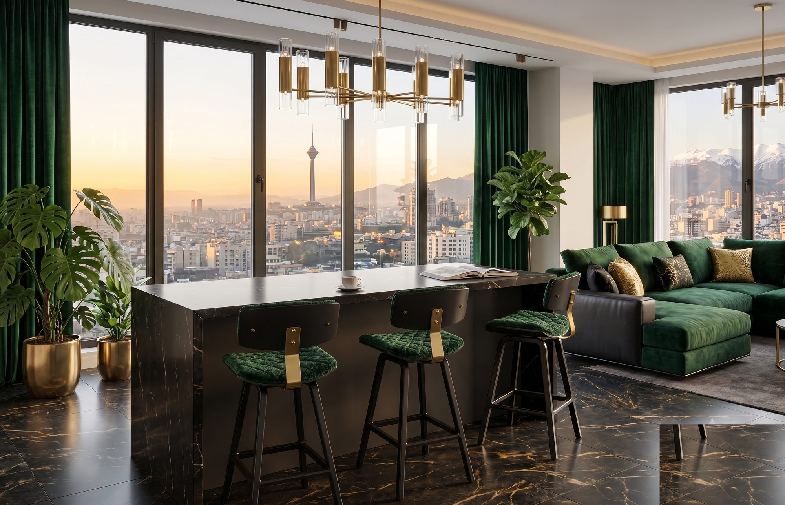
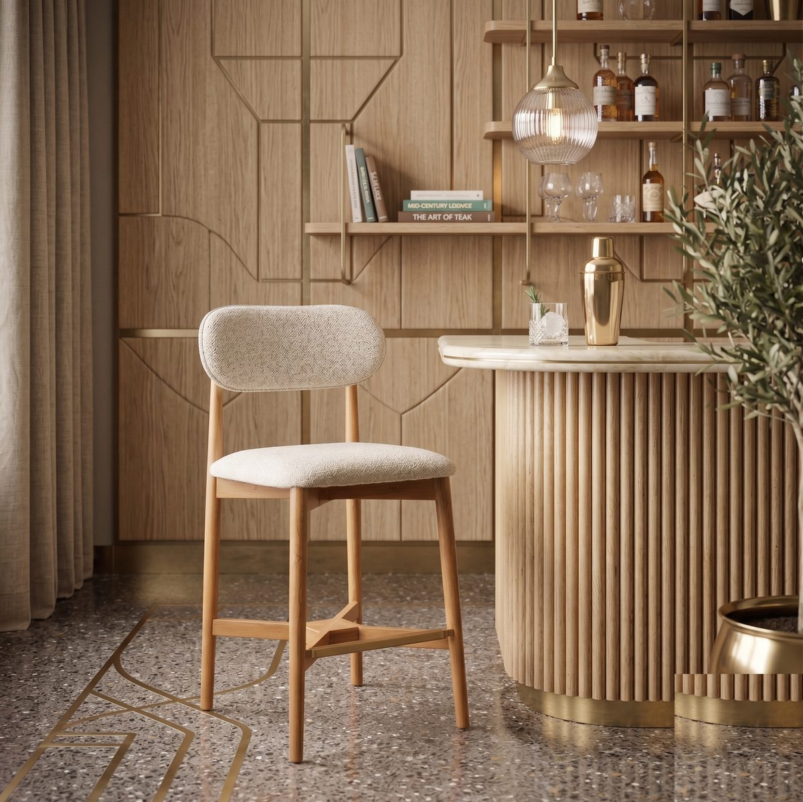
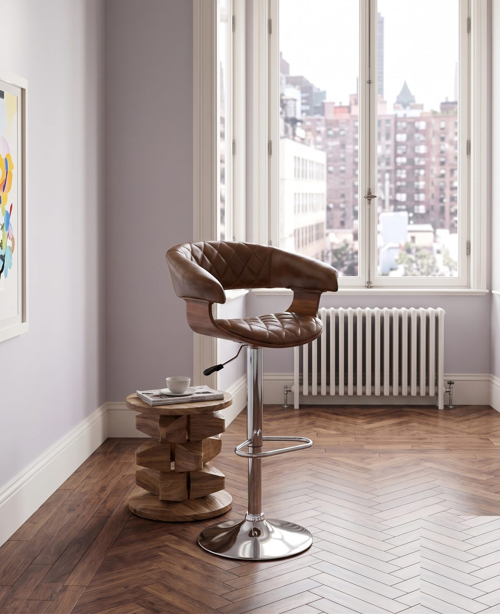
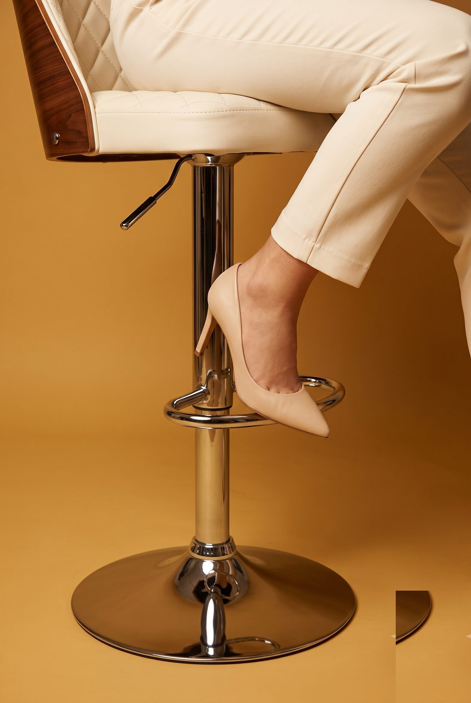

از سال ۱۳۸۹ در چهاردانگهی تهران، صندلی میسازیم — با این باور که هر مدل باید اول زیبا باشد، بعد راحت، بعد بادوام.
اسکرول
فلسفهی ما
مجموعهها

صندلی نهاری
۰۲
صندلی اداری
۰۳مدل ۲۲۰۷
فرم منحنی پشتی و ارتفاع قابل تنظیم، این مدل را به یکی از متمایزترین محصولات ما تبدیل کرده — طراحیشده برای فضاهایی که جزئیات در آنها اهمیت دارد.
جزئیات مدل ←۲۲۰۷ — روکش مخمل زرشکی

پایهی کروم با جک تنظیم ارتفاع
متریال و رنگ
مشکی مات
زرشکی
چرم عسلی
کرم
سبز جنگلی
چوب راش